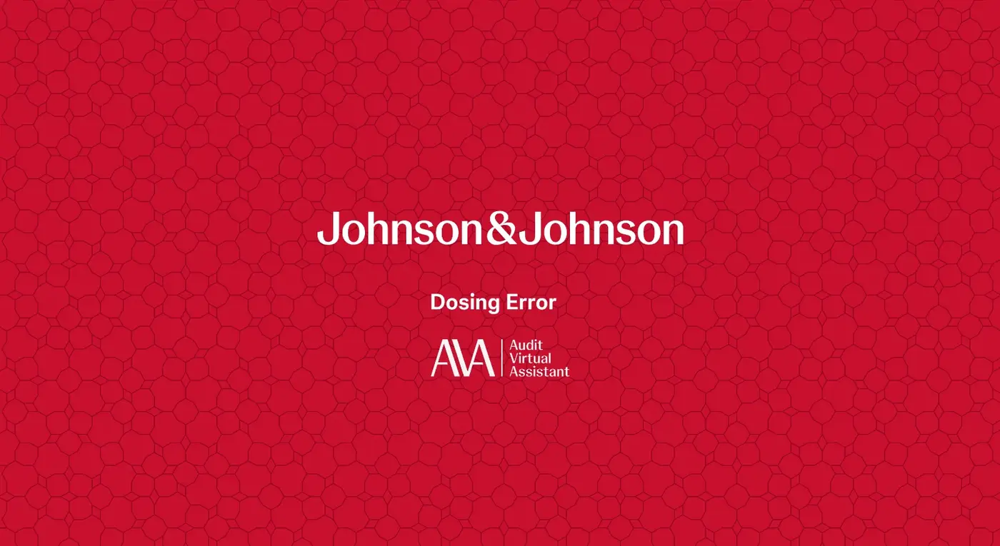
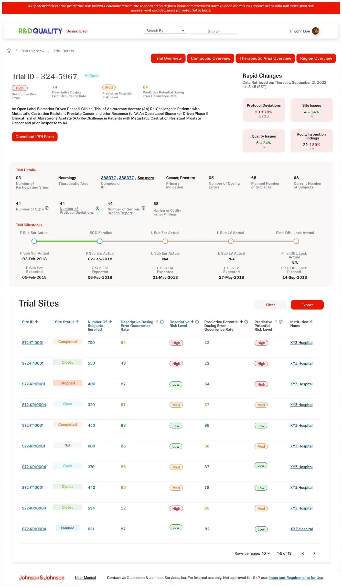

Case study 01 · AVA & Dosing Error Johnson & Johnson R&D Quality · TCS Interactive · 2023–24
Seeing risk before it reaches a patient
Two AI tools that flag risk in clinical trials, designed so quality teams can see why, check the data and make the final call.

Problem
Trial risk was found in Excel and debated by email: about two weeks, with no audit trail.
Insight
Users didn’t need more AI. They needed to see why a trial was flagged.
Solution
One three-level risk scale, scores that show their reasons, and a person who makes the final call.
Result
70% fewer task errors in usability tests, and 6 releases in 13 months.
The product Dosing Error · trial details

- 1Every score is labelled a prediction. People make the final call.
- 2One template. Tabs switch the lens: trial, compound, area, region.
- 3Risk level as a word and a number, never colour alone.
- 4The data date sits on every score, so no one acts on old data.
- 5What changed since the last refresh, at a glance.
Shared as a portfolio sample. Some screens are simplified, and confidential client data is not shown.
01 Context
Two AI tools, one question: where is the risk?
The readers are scientists and doctors with five minutes between meetings. They need the answer, not the dataset.
Which trials risk a dosing mistake?
Clinical teams and risk managersWhich trials and sites should we audit next?
Quality leads and auditorsThree colours, one meaning
Both tools share one risk scale. Each level reads as a number, a word and a shape, never colour alone.
02 My role
What I owned
Me
- Journeys and every screen, wireframe to high fidelity
- The Figma design system: tokens, components, usage notes
- How risk is shown, explained and overridden
- Usability sessions, and coded prototypes
The team
- Product owners set priorities and scope
- Data scientists built the risk models
- Developers built the front end and pipelines
- J&J quality leads signed off each release
03 Workflow
From a risk flag to an audit decision
A misread score can send auditors to the wrong site. Before designing any screen, I mapped one task end to end and gave every step a safeguard.
- 1FlagNew high-risk sites pinned and counted
- 2UnderstandScore labelled a recommendation, linked to data
- 3CheckData date on every score; “Limited data” under 20 patients
- 4DecideOverride needs a reason; no bulk dismiss
- 5RecordEvery decision logged and exportable
- 6Follow upA rising score re-flags the site
Reviewed with J&J quality and the computer-system validation team for GxP. Nothing about how risk is shown shipped without their sign-off.
04 Research
Tested with the people who use it
Errors on the same five tasks (find the riskiest site, filter, export), indexed so old screens = 100. A usability measure, not live use.
What we learned
- “Why red?”People wouldn’t act on a score they couldn’t explain. Score reasons shipped in V1.1.
- “Show me which trials need attention.”They wanted the answer before the data. Every page now leads with the top risks.
- Auditors wanted to record whyA dismiss with no reason felt unsafe. Overrides now need one, and every decision is logged.
05 Decisions
Saying no, and getting to yes
No percentage on the score
The ask was “73% chance of a dosing error”. The model isn’t calibrated for that, so I pushed back. Three levels plus their reasons are faster to read and easy to defend.
Three levels, not five
Data science wanted five, J&J wanted their RAG scale. In a 90-minute workshop everyone sorted 20 real scores alone. Five split the room; three didn’t.
06 Delivery
6 releases in 13 months
Two-week sprints, with design one sprint ahead of build. I used Claude to build coded prototypes on synthetic data, so sessions tested real behaviour.
- V1.0Sep 2023Trial overview and risk scale
- V1.1Nov 2023Score explanations, after “why red?”
- V1.2Jan 2024One filter and export
- V2.0Apr 2024AVA launches on the same system
- V2.2Jul 2024Override and audit trail
- V2.4Oct 2024Three new portfolio overviews
07 The product
One template, four lenses on risk
Instead of four bespoke dashboards, one overview swaps its lens (trial, area, compound, region) and keeps the same filters and exports.


The system behind it
One Figma library served both tools: tokens, components and usage notes. Three to four later products were built on it.
- risk/high
- risk/medium
- risk/low
- risk/limited-data
Key parts of the system, redrawn for this page.
08 Impact
Safer decisions, shipped in small steps
What worked
Mapping what could go wrong before designing.
What I’d change
Test with auditors sooner. The override reason belonged in V1.
Next to measure
Time from flag to decision in live use.
Work with me
Hiring a product designer? Let’s talk.